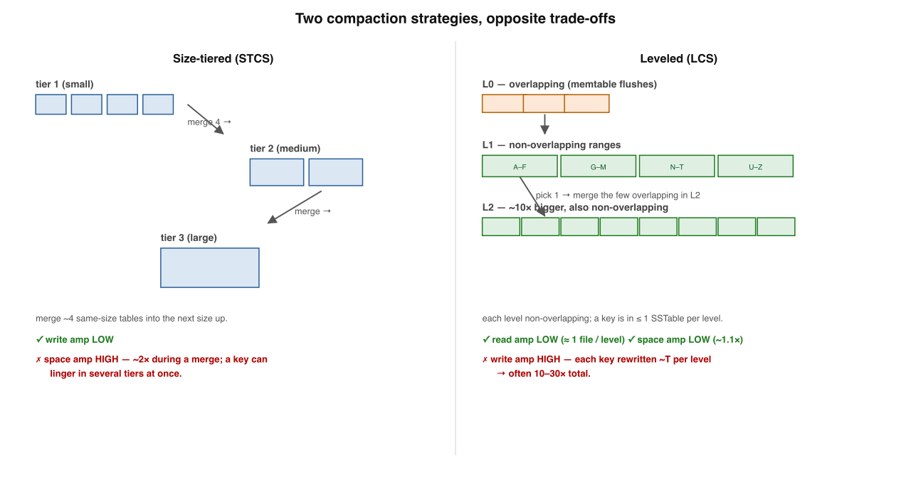
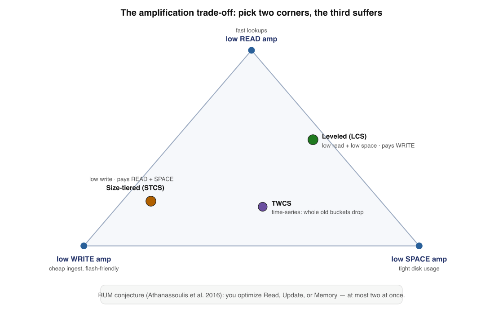
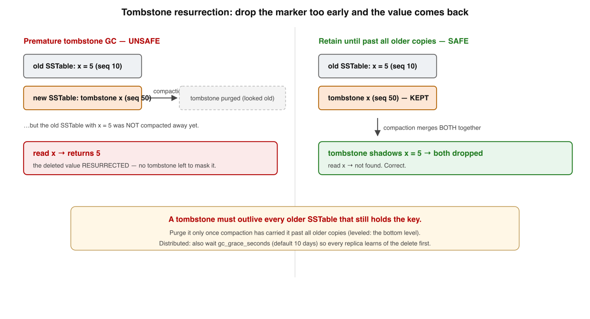

~25 min · 6 levels · diagrams + interview questions · interactive recall · supplement to Book 3, Lessons 3–4
Your bar: redraw the two compaction strategies, the amplification triangle, and the
resurrection bug on a whiteboard — and pick a strategy per table by its access pattern. Lesson 3 left
"compaction" as one word. It is really a policy, and it is the single biggest performance
decision in an LSM engine.1
One sentence holds the whole deep dive. Each level just unpacks one chip of it:
Compaction reclaims space & consolidates a key's history,but every policy is scored on 3 amplificationsyou can only win two of three (RUM),and getting deletes wrong resurrects data.
Memorise this banner. "Just compact in the background" hides a policy choice — and that choice is where the engine's whole performance profile is decided.
1
The job & the three amplifications
The LSM path is append-only: dead data piles up and one key scatters across files. Compaction's bill comes in three currencies.
Every compaction strategy is just a point that trades these three off against each other.
The job Reclaim space from dead records (overwrites, deletes) and consolidate a key's scattered history into fewer files.
Why it exists The LSM path is append-only — you can't update in place, so garbage and duplicate keys accumulate forever without it.
Write amp Disk bytes ÷ app bytes. Background rewrites cost real write bandwidth and flash endurance.
Read / Space amp Files touched per logical read; and disk bytes ÷ live bytes. One read latency, one storage bill.
✗ "Compaction is just background cleanup; tune it later"
✓ It is THE policy choice — it sets read latency, write ceiling, and disk cost
⚖️ Iron law: Lowering one amplification raises another — there is no free strategy, only one matched to your workload. (RUM conjecture3)
Memory check
Name the three amplifications. → write, read, space
What forces compaction to exist? → the append-only path piles up dead data
The iron law in one line? → lower one amp, another rises
2
Size-tiered (STCS) — the write-optimized corner
Bigtable's original, Cassandra's historical default. Group SSTables by size; merge a batch of same-size tables into one of the next size up.
Tiers grow geometrically, so a key is rewritten only ~log(N) times — cheap writes. The bill is disk: a big merge briefly needs ~2× the dataset, and stale copies live across tiers.
Write amp · LOW A key is rewritten once per tier it passes, tiers grow geometrically → ~log(N) total. Writes are cheap.
Space amp · HIGH A merge needs room for inputs + output at once (~2× worst case); stale copies linger across un-merged tiers.
Read amp · MED–HIGH A point lookup may consult one (or more) SSTable per tier; a key that exists can be chased through several.
Reach for it Write-heavy ingest, disk to spare. The write-optimized corner of the triangle.
✗ "STCS is the safe default — it's cheap"
✓ A single big merge can momentarily double disk; clusters have run out of disk because of compaction
📥 Memory rule: Size-tiered = merge same-size tables upward; cheap writes (~log N), but high space (~2× spikes) and duplicate keys across tiers.
Memory check
What groups SSTables in STCS? → their size
Which amp is its weakness? → space (~2× during a big merge)
When to reach for it? → write-heavy, disk to spare
3
Leveled (LCS) — the read-and-space-optimized corner
LevelDB's design; RocksDB's & modern Cassandra's choice for read-heavy data. Levels L0,L1,L2… each ~T× (≈10) the last.
The invariant: in every level except L0, SSTables have non-overlapping key ranges — so any key lives in at most one SSTable per level.

Size-tiered vs leveled, side by side. Left: STCS merges same-size tables into bigger tiers (cheap writes, lots of space, a key may live in several tiers). Right: LCS keeps each level non-overlapping and ~10× the last, merging one table down at a time (cheap reads + space, but each key rewritten many times).
Dimension
Size-tiered (STCS)
Leveled (LCS)
Groups by
Size of SSTable
Level (each ~10× the last)
Overlap
Tables can overlap
Non-overlapping below L0
Write amp
Low (~log N)
High (10–30×)
Read amp
Med–high
Low (≤1 file/level)
Space amp
High (~2× spikes)
Low (~1.1×)
✗ "Leveled is strictly better — it's the modern default"
✓ It buys low read + space by paying 10–30× write bandwidth; wrong for write-heavy ingest
Why is L0 the exception? → it takes raw flushes that overlap
The number to remember? → write amp ~10–30×
4
The trade-off triangle — pick two of three
Put both strategies on one picture and RUM gets concrete: minimise any two of read/write/space and the third suffers.

The amplification trade-off. Read, write, and space form a triangle; a strategy is a point inside it. Leveled sits near low-read/low-space (paying write); size-tiered sits near low-write (paying read and space). You cannot reach all three corners at once.
Strategy
Write
Read
Space
Reach for it when
Size-tiered
low
med–high
high
write-heavy, disk to spare
Leveled
high
low
low
read-heavy, space-constrained
Time-window (TWCS)
low
low*
low
time-series with TTLs
* within a time window. Hybrids sit between corners: RocksDB universal compaction is tiered-leaning; Cassandra TWCS buckets SSTables by time so whole old buckets drop at once.
✗ "One global compaction setting is fine for the whole DB"
✓ Senior move: choose per table / column family by access pattern — like choosing indexes per query
🔺 Memory rule: RUM: you may minimise two of {read, write, space} — never all three. Match the corner to the table's workload.
Memory check
How many of the three can you minimise? → two
Where does TWCS fit and why? → time-series/TTL; whole old buckets drop at once
At what granularity should you choose? → per table / column family
5
Tombstones & the resurrection bug
A delete can't erase in place — the data is in immutable SSTables. So a delete writes a tombstone: "this key is dead as of this sequence number."
A tombstone must outlive every older SSTable still holding the value. Purge it too early and the next read finds the old value with nothing to mask it.

Tombstone resurrection. A delete writes a tombstone, but an older SSTable still holds the value. Purge the tombstone before that old SSTable is compacted away, and the value reappears. The tombstone must survive until compacted past all older copies.
The rule Purge a tombstone only after compaction has carried it where no older data for that key can remain — bottom level (LCS), or merged past every older tier (STCS).
Distributed twist Cassandra holds tombstones for gc_grace_seconds (default 10 days) — the delete must reach every replica first, or read-repair/hinted-handoff re-shares the old value cluster-wide.
Read amp from tombstones Tombstones are data until purged; a range read scans them all. A queue-like (write/read/delete) workload buries a partition in them.
The symptom "My queue table times out reads" is, 9 times in 10, tombstone overload — Cassandra aborts past tombstone_failure_threshold (default 100,000).
✗ "A delete frees the space and removes the key immediately"
✓ A delete WRITES a marker; the key + tombstone are dropped together only after compaction passes every older copy
🪦 Memory rule: A tombstone must outlive every older copy of its key — premature GC is a real, shipped data-loss-in-reverse bug.
Memory check
What does a delete actually write? → a tombstone (a marker), not an erase
When may a tombstone be purged? → once compacted past all older copies of the key
Why gc_grace_seconds? → the delete must reach every replica first
6
L0, write stalls & back-pressure
The operational reality that pages you. L0 takes raw flushes (overlapping), and it's the pressure gauge for the whole tree.
A read must consult every L0 file (ranges overlap, so binary search can't pick one) — a fat L0 slows every read AND signals the tree is falling behind.
Why L0 is special It takes raw memtable flushes that overlap → a read scans all of L0, and its file count is the pressure gauge for the tree.
Back-pressure If writes outrun the drain rate, the engine deliberately slows then stops writes so compaction can catch up — that's the stall, not a failure.
RocksDB knobslevel0_slowdown_writes_trigger (throttle), level0_stop_writes_trigger (halt), and soft/hard pending_compaction_bytes_limit (by debt).
The fix Never "write faster": give compaction more I/O (threads, faster disks), pick a cheaper-write strategy (tiered), or smooth the write rate.
✗ "Sudden write latency spikes mean the DB is just slow / broken"
✓ It's back-pressuring: compaction fell behind L0 and the engine is throttling on purpose
🚦 Deepest LSM truth: Your sustainable write rate is bounded by your compaction throughput, not your disk's raw write speed.
Memory check
Why must a read touch all of L0? → its SSTables overlap; no binary search
What are stalls, really? → deliberate back-pressure while compaction catches up
What bounds sustainable write rate? → compaction throughput, not raw disk speed
Interview — pick your bar
Answer out loud in ~60s, then reveal. Core = recall · Senior = trade-offs & failure modes · Staff = synthesis under ambiguity · System Design = open design round (a different axis, not a harder level).
Walk the LSM write path from a client write to a key on disk: memtable, WAL, SSTable.
Hit these points: a write appends to the WAL for durability and inserts into the in-RAM memtable (a sorted map — skip list / RB-tree) → no in-place disk write happens, which is why writes are fast → when the memtable fills it is frozen and flushed as a new immutable SSTable: an on-disk file sorted by key → SSTables are never modified, only merged away by compaction → updates and deletes are also just writes — a newer value or a tombstone is appended and shadows the old one → the WAL exists so a crash before flush doesn't lose the memtable's contents.
What is an SSTable, and why does its sortedness make merging cheap?
Hit these points: an SSTable is an immutable on-disk file of key,value entries sorted by key, with a sparse index so a key can be found with one seek into a block → immutability means readers and compaction never contend over in-place edits — you only ever create new files and delete old ones → because every SSTable is already sorted, merging N of them is a linear k-way merge in one pass, like merge-sort's merge step: no random I/O, no re-sorting → during the merge you keep the newest value per key and drop shadowed/tombstoned ones → that "two sorted files merge in one sequential pass" is the property the whole engine is built on.
Name the three amplifications and say who pays for each.
Hit these points:write amp = disk bytes ÷ app bytes — pays in flash wear and write throughput → read amp = SSTables (disk reads) touched per logical read — pays in read latency and p99 → space amp = disk bytes ÷ live data bytes — pays the storage bill → the iron law (RUM conjecture): lowering one amplification raises another, so there is no free strategy → every compaction policy is just a chosen point in this trade-off space.
What does a Bloom filter do in an LSM read path, and what guarantee does it give?
Hit these points: each SSTable carries a Bloom filter over its keys; before opening the file a read probes the filter → the guarantee is one-sided: "definitely absent" is never wrong, "probably present" can be a false positive → so a "definitely absent" answer lets the read safely skip that SSTable — turning an absent-key read that would touch every run into one (rare) false-positive open → cost is small: ~10 bits/key for a ~1% false-positive rate (illustrative) → it attacks read amp specifically for negative/point lookups; it does nothing for range scans, which must still consult overlapping runs.
Compare size-tiered and leveled compaction. When do you pick each?
Hit these points:STCS groups SSTables by size and merges a batch of same-size tables into one of the next size up; tiers grow geometrically so a key is rewritten only ~log N times → that buys low write amp but costs space (a big merge needs ~2× the dataset, and stale copies linger across un-merged tiers) and med–high read amp → LCS keeps levels L1+ non-overlapping, each ~10× the last, merging one table down into the few it overlaps → that buys low read amp (≤1 file per level + L0) and low space amp (~1.1×) but pays write amp ~T·log_T(N) ≈ 10–30× → pick STCS for write-heavy ingest with disk to spare; LCS for read-heavy, space-constrained data.
Why can leveled compaction guarantee a point read touches at most one SSTable per level?
Hit these points: the LCS invariant: in every level except L0, SSTables have non-overlapping key ranges → so each level below L0 is effectively one sorted run with disjoint ranges, and any given key can fall in exactly one table there → L0 is the exception because it takes raw memtable flushes that do overlap, so a read still scans all of L0 → total files consulted ≈ all of L0 + one per level ≈ log_T(N) → that bounded read amp is exactly what you pay the 10–30× write amp to get.
Walk me through the tombstone resurrection bug and how engines prevent it.
Hit these points: a delete can't erase data in immutable SSTables, so it writes a tombstone: "this key is dead as of this sequence number" → the value still lives in an older SSTable; the tombstone shadows it on read → the bug: if the tombstone is purged before the older SSTable holding the value is compacted away, the value reappears with nothing to mask it — a deleted record comes back to life → prevention: only drop a tombstone once compaction has carried it past every older copy of that key (the bottom level / past all older tiers) → distributed twist: Cassandra holds tombstones for gc_grace_seconds (default 10d) so the delete propagates to every replica before GC, or a node that missed the delete re-replicates the stale value.
What triggers compaction, and why does an LSM under heavy ingest start stalling writes?
Hit these points: compaction is triggered by structural thresholds, not a timer: STCS fires when enough same-size SSTables accumulate in a tier; LCS fires when a level exceeds its size target; engines also track L0 file count and pending-compaction bytes → under sustained ingest, writes can outrun compaction's drain rate, so L0 / pending-compaction-bytes crosses a slowdown then stop trigger and the engine applies back-pressure — that's the stall → what you do not do is "write faster" → the fixes give compaction more throughput (more threads, faster disk), switch to a cheaper-write strategy, or smooth/shard the ingest → the underlying truth: sustainable write rate is bounded by compaction throughput.
Should one compaction strategy apply to the whole database? Make the principal-level call.
Hit these points: no — a single global setting forces one corner of the read/write/space triangle on every table regardless of its access pattern → the senior move is to choose per table / column family, the same way you choose indexes per query → a write-once-read-rarely audit log wants tiered or time-windowed; a hot read-mostly profile table wants leveled; a TTL'd time-series wants TWCS → trade-off to name: per-table tuning adds operational surface and reasoning cost, so default sensibly and only override where the workload data justifies it → the discipline is matching each table's dominant amplification to a measured access pattern, not picking one strategy by reputation.
"Leveled is the modern default, just use it everywhere." Steelman it, then take it apart.
Steelman: leveled gives bounded read amp (≤1 file/level) and low space amp (~1.1×), so reads are predictable and you don't risk running out of disk during a merge — for read-mostly, space-constrained, SSD-backed data that's genuinely the right corner. Take it apart: leveled pays 10–30× write amplification, so on a write-heavy or ingest-firehose table it burns write bandwidth and flash endurance and is the first to hit write stalls → "default everywhere" forces that write tax onto tables that are mostly appended and rarely read → for append-only TTL'd time-series, TWCS beats it on all three by dropping whole old buckets at once. Synthesis: there is no globally-best strategy — leveled is one well-chosen point; match the corner to each table's workload and disk profile, and watch write-amp/stall metrics to know when you chose wrong.
Where do TWCS and RocksDB's universal compaction sit relative to STCS and LCS, and why do hybrids exist?
Hit these points: STCS and LCS are the write-optimized and read/space-optimized corners; real workloads often sit between them, which is why hybrids exist → RocksDB universal compaction is tiered-leaning — write-friendly, fewer rewrites than leveled, accepting more space/read amp → Cassandra TWCS buckets SSTables by time window for append-only, TTL'd time-series, so whole old buckets expire and drop at once — achieving low write + low space + low read within a window by exploiting the access pattern rather than beating RUM → the staff signal is naming the workload that justifies the hybrid (time-series with TTLs, immutable events) instead of treating compaction as one global knob → the lesson: you escape the triangle only by changing the workload's shape, not by tuning harder.
Design-round framework — drive any compaction-strategy prompt through these, out loud:
Clarify the workload per table: write:read ratio, point vs range reads, update/delete rate, TTLs.
State the SLO and budget: p99 read latency, sustainable write rate, disk headroom.
Map onto RUM: which of read/write/space can you afford to spend, which must stay low.
Pick the corner: STCS (write-heavy), LCS (read/space-heavy), TWCS (time-series + TTL), or a hybrid.
Protect reads: Bloom filters, block cache, partition/clustering key so hot data sits in fresh runs.
Trip-wires: L0 / pending-compaction bytes, write stalls, space-amp spikes during merges — and the metric that says re-tune.
Design the compaction strategy for a write-heavy ingest table vs a read-heavy lookup table in the same cluster.
A strong answer covers: reject one global setting — choose per table / column family by access pattern → write-heavy ingest (firehose, mostly appended, rarely point-read): size-tiered, because ~log N rewrites keep write amp low and protect the sustainable write rate; accept the ~2× space spikes and med–high read amp, and provision disk headroom so a big merge can't exhaust the volume → if events carry TTLs, prefer TWCS so whole old buckets drop at once — lowest write + space + read within a window → read-heavy lookup (point reads, latency-sensitive, space-constrained): leveled, paying 10–30× write amp to buy ≤1 file/level read amp and ~1.1× space; lean on Bloom filters and block cache for negative/point lookups → name the trade-offs: STCS risks running out of disk during merges and slower reads; LCS risks write stalls if the "read-heavy" table actually takes heavy writes → monitor L0/pending-compaction and p99 read per table, and re-tune when a table's real workload diverges from the assumption — sustainable write rate is bounded by compaction throughput, so size compaction I/O to the ingest table's rate.
Design deletes + compaction for a Cassandra time-series store that must honor data-retention (TTL) and GDPR-style erasure.
A strong answer covers: the workload is append-only, time-ordered, with TTL expiry and occasional hard deletes — that points at TWCS, bucketing SSTables by time window so whole expired windows drop in one operation instead of rewriting live data → model the partition/clustering key on time so a window maps cleanly to a bucket and old data ages out as a unit → deletes/expiry produce tombstones; the resurrection rule still binds — a tombstone must outlive every older copy, so set gc_grace_seconds long enough for the delete to reach every replica (default 10d) before GC, balanced against not letting tombstones pile up → avoid tombstone-heavy access (no queue/range-scan-over-deleted patterns) since reads scan tombstones and hit tombstone_failure_threshold → for GDPR erasure, ensure the delete propagates and is actually purged after the older SSTables compact away — TTL alone shadows but doesn't immediately reclaim, so verify space returns after compaction → name the trade-offs: TWCS gives near-free retention drops but is wrong if the table takes out-of-window updates or random deletes; tuning gc_grace_seconds trades resurrection safety against tombstone read cost and erasure latency.
Q6. The RUM conjecture says a compaction strategy can minimise…
Reconstruct the deep dive from a blank page
Write the six levels in order, one line each, with nothing on screen. Then reveal and compare — gaps are your next drill.
1 Job: reclaim space + consolidate; scored on write/read/space amp (iron law) · 2 STCS: merge same-size upward; low write (~log N), high space (~2×), med–hi read ·
3 LCS: non-overlapping levels ~10×; low read (≤1/level) + low space (~1.1×), high write (10–30×) ·
4 Triangle: RUM, pick two of three; choose per table; TWCS/universal are hybrids ·
5 Tombstones: delete = marker; must outlive every older copy or data resurrects; gc_grace_seconds ·
6 L0 + back-pressure: writes > drain ⇒ slowdown/stop triggers; sustainable write rate = compaction throughput.
I'm your teacher — ask me anything. Say "grill me on compaction" for mixed
no-clue questions, or hand me a real table (its read/write mix, TTLs, delete pattern) and we'll place it
on the amplification triangle and pick STCS / LCS / TWCS together. Want a whiteboard round on diagnosing a
write stall? Just ask.
★ Cheat sheet — compaction in one screen
Mental models: Compaction = GC + consolidation for the LSM tree · 3 amps = write / read / space · Iron law = lower one, raise another (RUM) · STCS = write-optimized corner · LCS = read+space corner · Tombstone = a delete marker that must outlive every older copy · L0 = the pressure gauge · Stall = deliberate back-pressure.
Strategy → workload
If the table is…
Reach for
Write-heavy ingest, disk to spare
Size-tiered (STCS)
Read-heavy, space-constrained
Leveled (LCS)
Append-only time-series with TTLs
Time-window (TWCS)
Mixed / tiered-leaning, one engine
Universal (RocksDB)
Numbers to remember
STCS write amp ≈ log(N), space ≈ 2× during a big merge · LCS write amp ≈ T·log_T(N) = 10–30×, space ≈ 1.1×, read ≤ 1 file/level · Cassandra gc_grace_seconds = 10 days, tombstone_failure_threshold = 100,000.
Three rules for the senior chair
① Choose a strategy per table by access pattern, not one global setting. ② Deletes don't erase — they write markers that must outlive every older copy. ③ A write stall is compaction falling behind; give it I/O, don't write faster.
📄 Supplement to Book 3, Lessons 3–4 · StackDepthNext ▸ Bloom filters & the read path (ask me to build it)